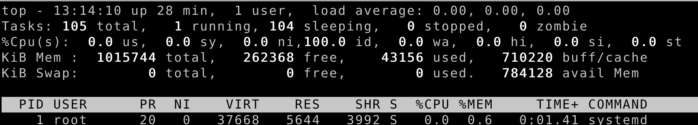

本文主要讲述了Linux的性能分析和优化的一些常用的工具和手段。
1 性能的衡量指标
吞吐和延时是衡量一个系统性能的核心指标。在考虑系统性能的时候，还需要考虑到系统的资源消耗情况。
性能优化的基本流程：
- 查看当前的系统负载
- 查看性能的瓶颈在哪里
- CPU
- 内存
- IO
- 网络
- 针对问题，进行性能的优化
2 查看系统负载的命令
使用top和uptime命令可以查看系统的负载情况。
top: 
平均负载：单位时间内，系统的平均活跃的进程数。当平均负载超过CPU数量的70%的时候，意味着系统可能处于过载状态。